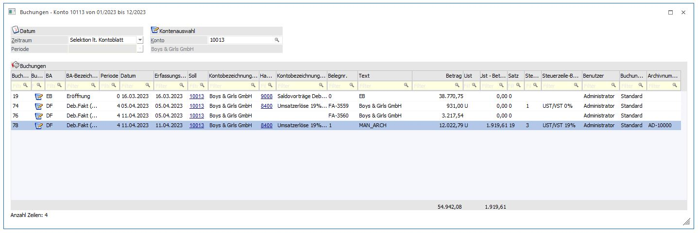
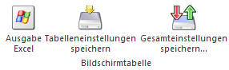
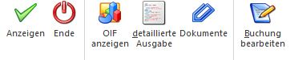
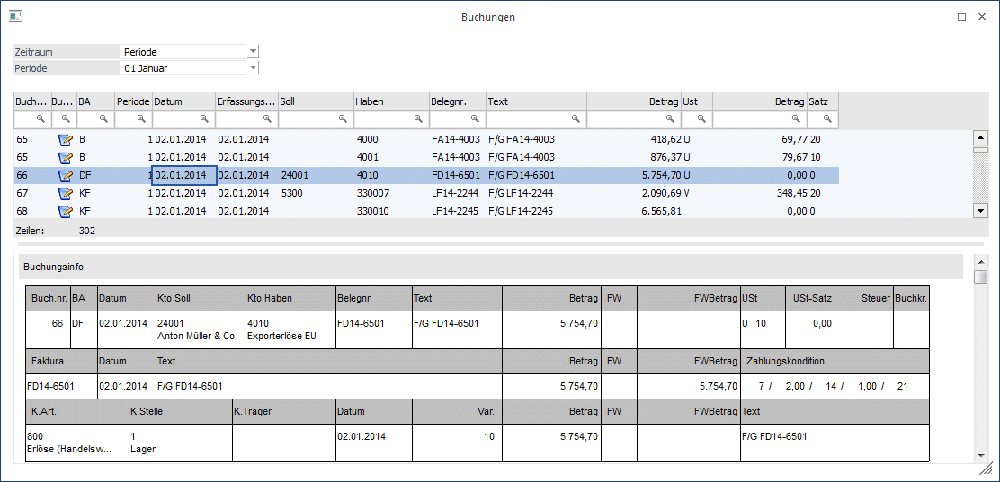
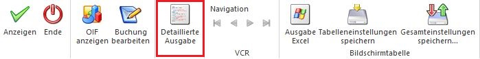
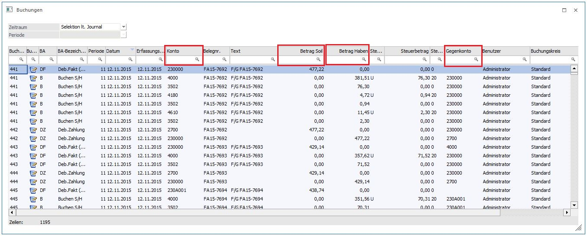

Durch die Anwahl des Ausgabe-Buttons "Ausgabe Tabelle" im Programm "FIBU-Journal" bzw. "Kontoblatt" werden alle zuvor selektierten Journalzeilen in Form einer WinLine Tabelle dargestellt.
Hinweis
Die Basis der Journalzeilen in der Tabelle bildet immer die zuvor getroffene Selektion im FIBU-Journal bzw. im Kontoblatt. D.h. in der Tabelle kann dieses Datenmaterial nur weiter eingeschränkt werden.

Ø Zeitraum
An dieser Stelle kann gewählt werden, welcher Zeitraum in der Tabelle betrachtet werden soll. Hierbei stehen folgende Varianten zur Verfügung:
ü Periode
ü vorherige Periode
ü letzten 2 Perioden
ü letzten 3 Perioden
ü bis Periode
ü Quartal
ü Halbjahr
ü gesamtes Jahr
ü Vorjahr bis Periode
ü gesamtes Vorjahr
ü alle Jahre bis Periode
ü alle Jahre
ü Selektion lt. Journal
Hinweis
Alle Zeitraumeinstellungen (außer "gesamtes Jahr" und "alle Jahre") beziehen sich auf die Auswahl im Feld "Periode".
Ø Periode
Auswahl der Periode, welche für den Zeitraum relevant ist. Der im Mandantenstamm hinterlegte Buchungsmonat wird voreingestellt.
Tabelle
In der Tabelle werden alle selektierten Journalzeilen angezeigt. Mit Hilfe der Suchzeile kann gezielt und komfortabel nach FIBU-Journalzeilen gesucht werden.
Spalten können über das Kontextmenü der rechten Maustaste (Funktion "Spalten anzeigen/verstecken") in die Tabelle eingebunden bzw. entfernt werden.
Ø Spalte "Buchung festgeschrieben"
In dieser Spalte ist ersichtlich, welche Buchung bereits festgeschrieben sind und welche per Doppelklick noch bearbeitet werden können. Dabei können folgende Symbole angezeigt werden:
ü Buchung noch nicht festgeschrieben und kann bearbeitet werden. Bei Doppelklick wird die Buchung im Buchen Dialog-Stapel geöffnet.
ü Buchung festgeschrieben und kann nicht bearbeitet werden. Per Doppelklick geht das Fenster "Buchungen nachbearbeiten auf.
ü Buchungen des Fakturenausgleichs können nicht bearbeitet werden.
Ø Drilldown Standard Funktion
In den Tabellenausgaben der Auswertungen "Journal" und "Kontoblatt" steht in den Konto-Spalten "Soll" und "Haben" diese Funktion zur Verfügung. Mit einem Doppelklick in das Feld wird die Standard-Drilldown-Funktion ausgeführt. Je nach Art des Kontos werden die möglichen Angaben zum Personenkonto oder für Sachkonten geöffnet. Ist das Feld in der betroffenen Zeile leer, stehen auf der rechten Maustaste auch keine Drilldown-Funktionen zur Verfügung.
Gleichfalls steht für die Auswertung "Saldenliste" als Tabellenausgabe in der Kontenspalte die Standard-Drilldown-Funktionalität zur Verfügung. Auch hier kann mit der rechten Maustaste die gewünschte Funktion gewählt werden. Je nach Kontoart werden die möglichen Angaben zum Personenkonto oder für Sachkonten geöffnet. Wird ein Doppelklick ins Drilldown-Feld gesetzt, wird die Standard-Drilldown-Funktion ausgeführt. Ein Doppelklick auf alle anderen Felder führt ins Programm "Buchung bearbeiten".
Hinweis
In allen anderen Spalten der Tabelle führt ein Doppelklick weiterhin zum "Buchungen bearbeiten".
Ø Archivnummer
Ist ein Archiveintrag vorhanden, dann wird der Dokumentenname ausgewiesen. Der Beleg kann über den Button in der Ribbonleiste "Dokumente" angezeigt werden.
Tabellenbuttons

Ø Ausgabe Excel
Durch Anwahl des Buttons "Ausgabe Excel" wird der Inhalt der Tabelle nach Microsoft Excel übergeben.
Ø Tabelleneinstellungen speichern
Die Spalten einer Tabelle können grundsätzlich an beliebige Positionen verschoben, bzw. in der Breite entsprechend angepasst werden. Durch Anwahl des Buttons "Tabelleneinstellungen speichern" werden die Einstellungen benutzerspezifisch gespeichert und bei dem nächsten Aufruf des Programmpunktes wieder vorgeschlagen.
Ø Gesamteinstellungen speichern
Im Gegensatz zu "Tabelleneinstellungen speichern" können mit "Gesamteinstellungen speichern" mehrere Tabellenaufbauten gespeichert und nach Wunsch geladen werden. Zusätzlich werden Sonderfunktionen der Tabelle (z.B. "Spalte gruppieren") ebenfalls bei der Speicherung bedacht.
Buttons

Ø Anzeigen
Durch Anwahl des Buttons "OK" bzw. der Taste F5 werden alle Suchkriterien der Suchzeile aufgehoben und der Inhalt der Tabelle neu aufgebaut.
Ø Ende
Mit Hilfe des Buttons "Ende" bzw. der Taste ESC wird das Fenster geschlossen.
Ø OIF Anzeigen
Über den Button "OIF Anzeigen" kann die Buchungsinfo der selektierten Buchung am Ende der Tabelle angezeigt werden.

Ø Detaillierte Ausgabe
In dieser erweiterten Tabellenausgabe ist für die Spalten "Konto" und "Gegenkonto" die Drilldown-Funktion vorhanden, sowie bei der Kontoblattauswertung für ein Steuerkonto die "Bmg-Konto".
Ø Dokumente
Wenn in der Spalte "Archivnummer" ein Eintrag vorhanden ist, dann kann über den Button "Dokumente" in der Ribbonleiste der Beleg angezeigt werden. Wird dieser Button aktiviert, dann bleibt er aktiv. Beim nochmaligen klicken auf diesen Button wird die Aktivierung aufgelöst. Wird die Zeile bei aktivem Button gewechselt, dann wird der aufgezeigte Archiveintrag (aus der vorherigen Zeile) geschlossen und der neue Beleg geöffnet. Nach dem Schließen der Tabelle ist der Button "Dokumente" wieder deaktiviert.
Ø Buchungen bearbeiten
Über den Button "Buchungen bearbeiten" oder per Doppelklick in eine Buchungszeile kann diese zur Überarbeitung im Buchen - Dialog-Stapel geöffnet werden.
Ist die Buchung bereits festgeschrieben, so wird das Fenster "Buchungen nachbearbeiten" geöffnet.
Ist dabei eine Rechnung ausgewählt worden, zu der es bereits Zahlungen gibt, so erscheint eine Hinweismeldung mit der ersten entsprechenden Buchungsnummer:

Wird die Meldung mit Nein bestätigt, so wird wieder das Fenster "Buchungen" angezeigt.
Bei Bestätigen mit Ja wird eine Liste mit allen entsprechenden Fakturen und den zugehörigen Zahlungen am Bildschirm ausgegeben. In dieser Liste werden die betroffenen Buchungen mit den Fakturen (d.h. jene, zu denen Zahlungen vorhanden sind) und die entsprechenden Zahlungen bzw. Buchungen in Zahlungsstapeln (aus dem Zahlungsverkehr) angezeigt. Mittels Klick auf die jeweilige Buchungsnummer kann die Buchungsinfo geöffnet werden.

Detaillierte Ausgabe Journal:

Wird das Journal als Tabelle ausgegeben, steht der Button 'Detaillierte Ausgabe' zur Verfügung.
Beim Anwählen des Buttons wird für jedes in der Buchung verwendete Konto eine Zeile in der Tabelle angezeigt, dabei ändern sich die angezeigten Spalten in der Tabelle:

- Statt den Spalten 'Soll' und 'Haben', gibt es in der detaillierten Ansicht die Spalte 'Konto.
- Statt der Spalte 'Betrag', gibt es in der detaillierten Ansicht die Spalten 'Betrag Soll' und 'Betrag Haben'.
- eine zusätzliche Spalte 'Gegenkonto' wird angezeigt.
Das gleiche gilt auch für das Kontoblatt.
Hinweis:
Wird das Journal mit der Option 'Journal detailliert' als Tabelle ausgegeben, wird automatisch die detaillierte Ausgabe auf Tabelle ausgegeben.